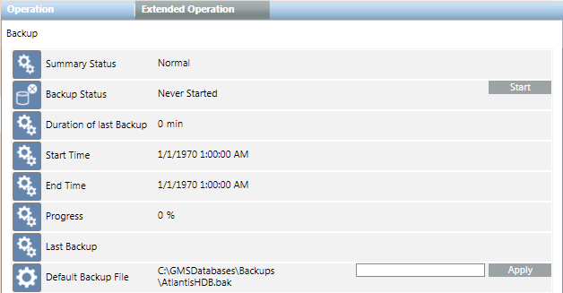

Manual Backup of HDB Data from the Management Platform
You want to make a manual backup of the HDB data at regular time intervals from the management platform as automatic data backup is not set up. For backing up HDB from SMC, see Manual Backup of HDB Data from SMC in Project and HDB Backup Procedures.
- Ensure that sufficient storage capacity is available on the backup media. Insufficient storage capacity results in faulty data backup. Prior to starting a backup, check that there is at least 150 GB of available storage.
- System Manager is in Engineering mode.
- In System Browser, select Management View.
- Select Project > Management System > Servers > Main Server > History Database > Backup.
- Click the Extended Operation tab.
- The backup function properties display.

- (Optional): In the Default Backup File field, enter a new backup file name, including its complete path, and click Apply. Type the path in one of the following two ways:
- To save locally: [drive]:\[myproject]\Backups\HDB.bak
- To save on the network: \\[mycomputer]\Backups\HDB.bak
- NOTE: This also changes the entry Backup file in the Historic Data tab of the System Management Console that is available in the SMC tree under System > History Infrastructure > [SQL Server Name] > [your HDB].
- Click Start.
- The process state goes to
Plannedduring backup. After successful completion of the backup, the display changes toSuccessfully Completedand also displays the backup date. The Last Backup information displays the backup folder and file name HDB.bak.

NOTE:
After successfully backing up the historical data, copy the HDB.bak file to an external storage medium, such as a server or a DVD. The data can be restored in the event of an error. It is recommended to always retain the last three backups.